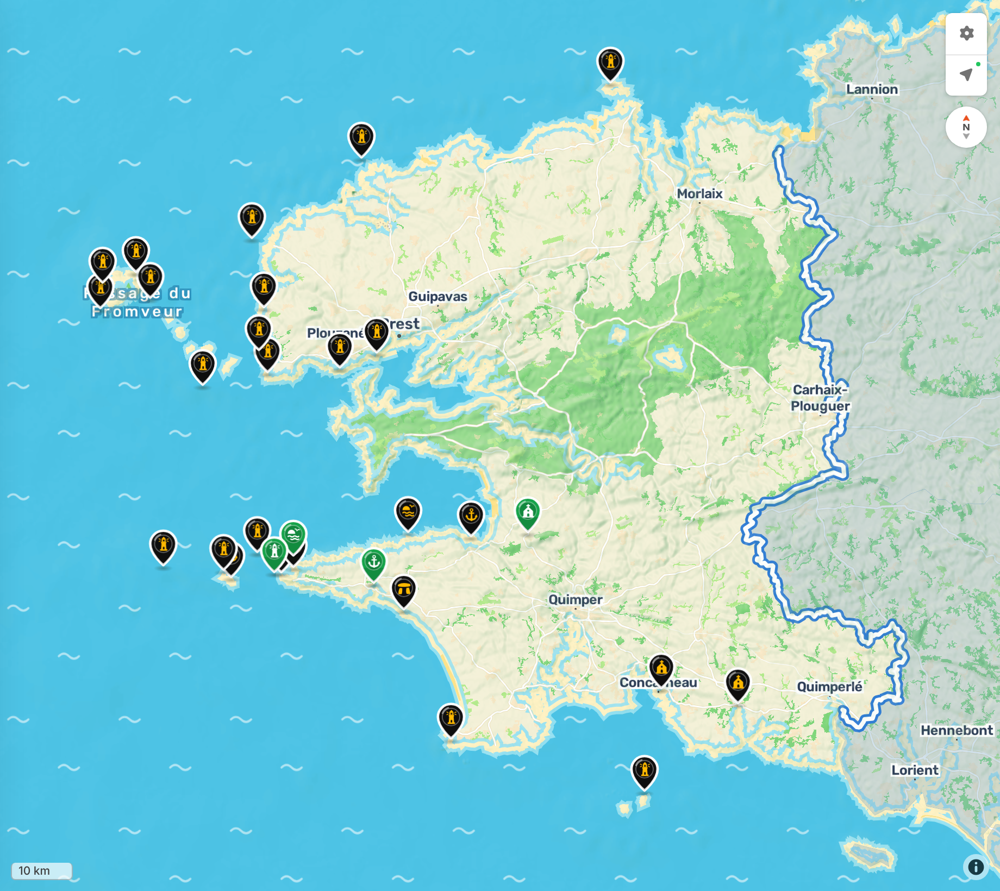
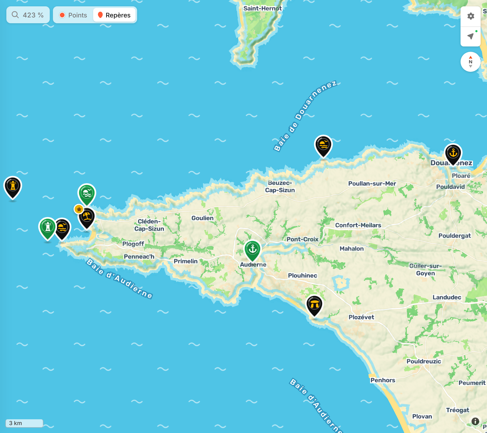
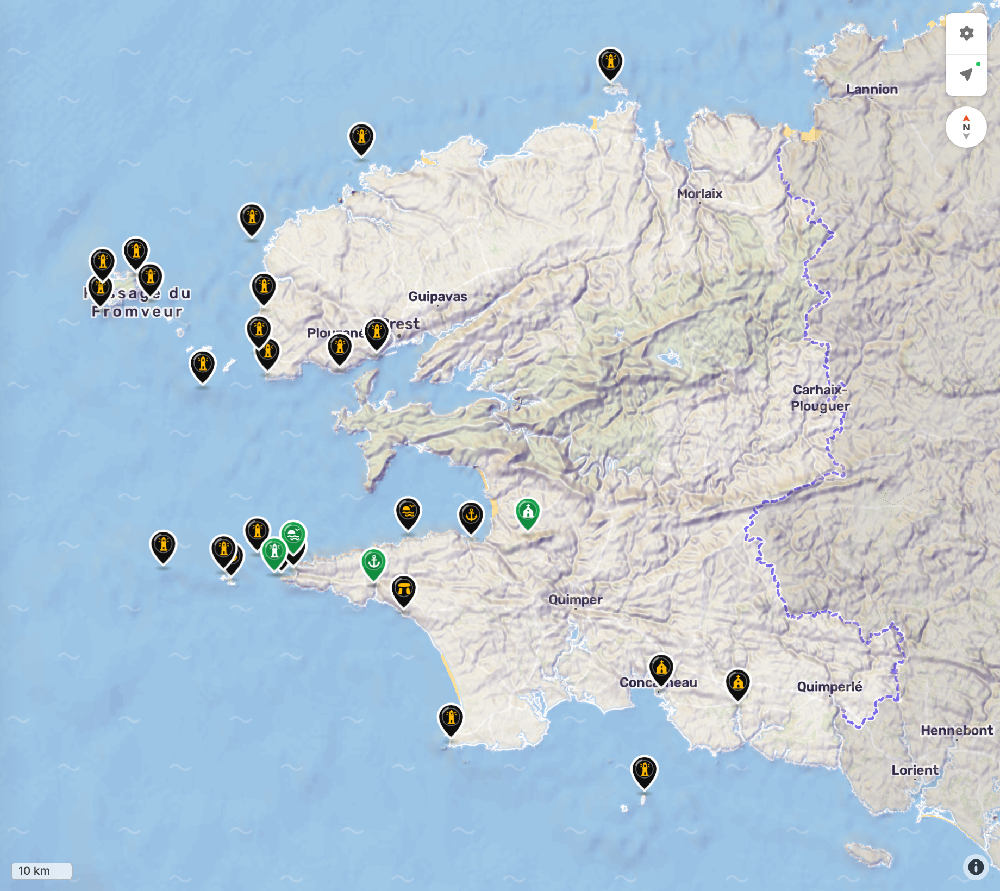
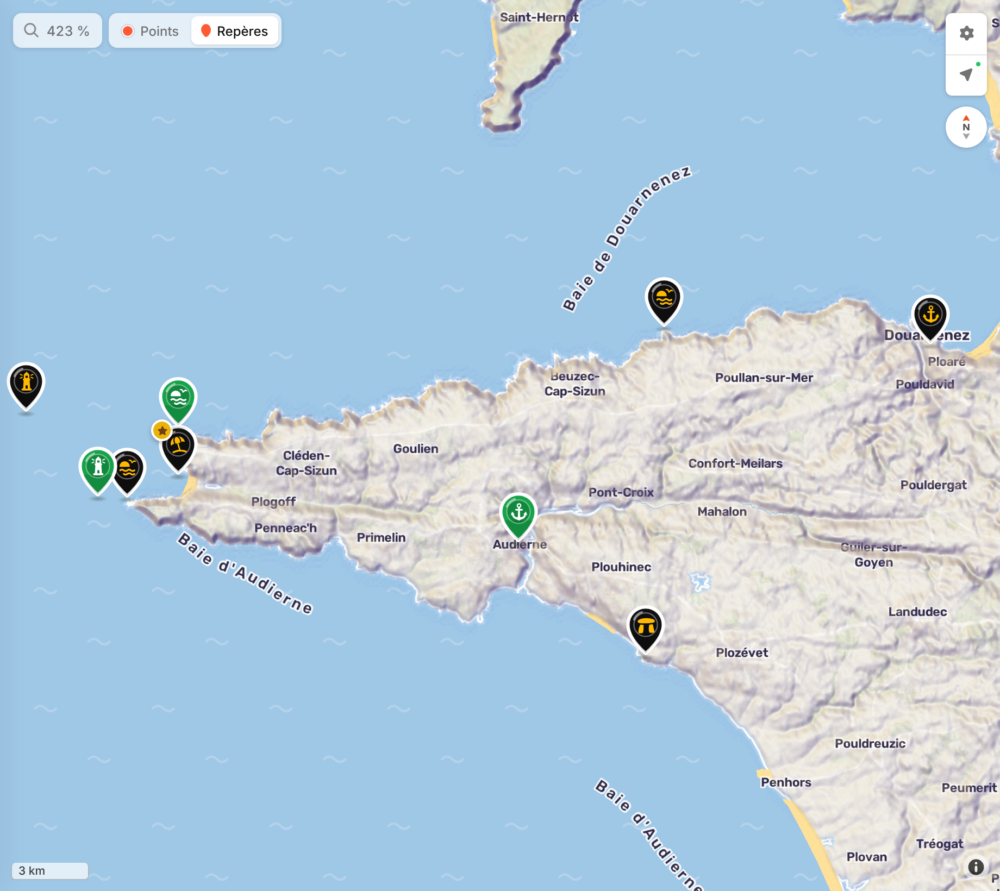
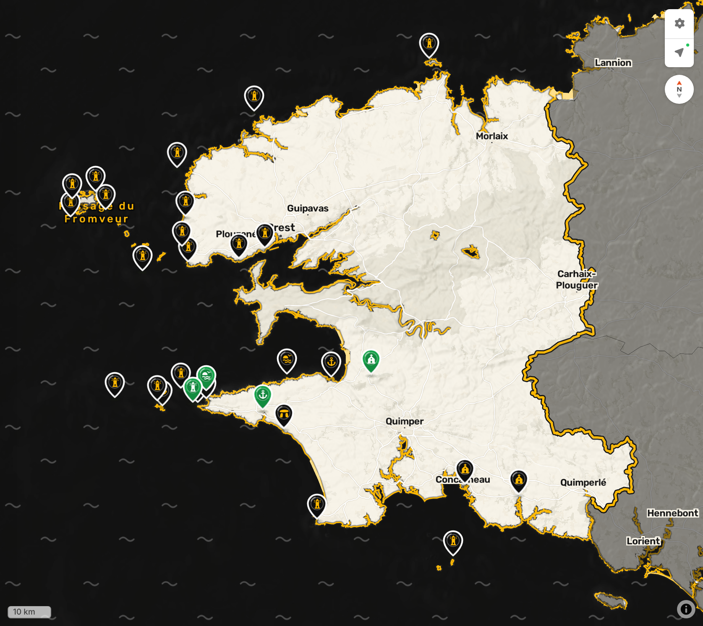
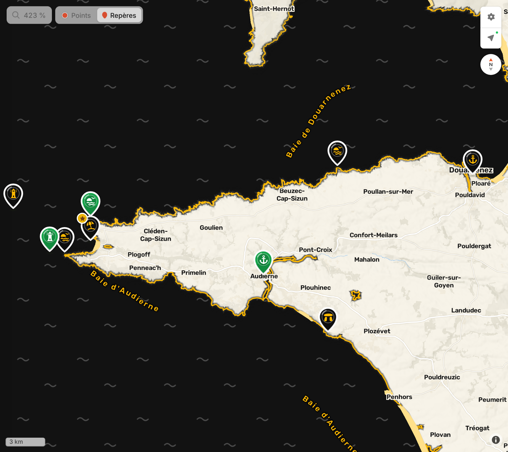
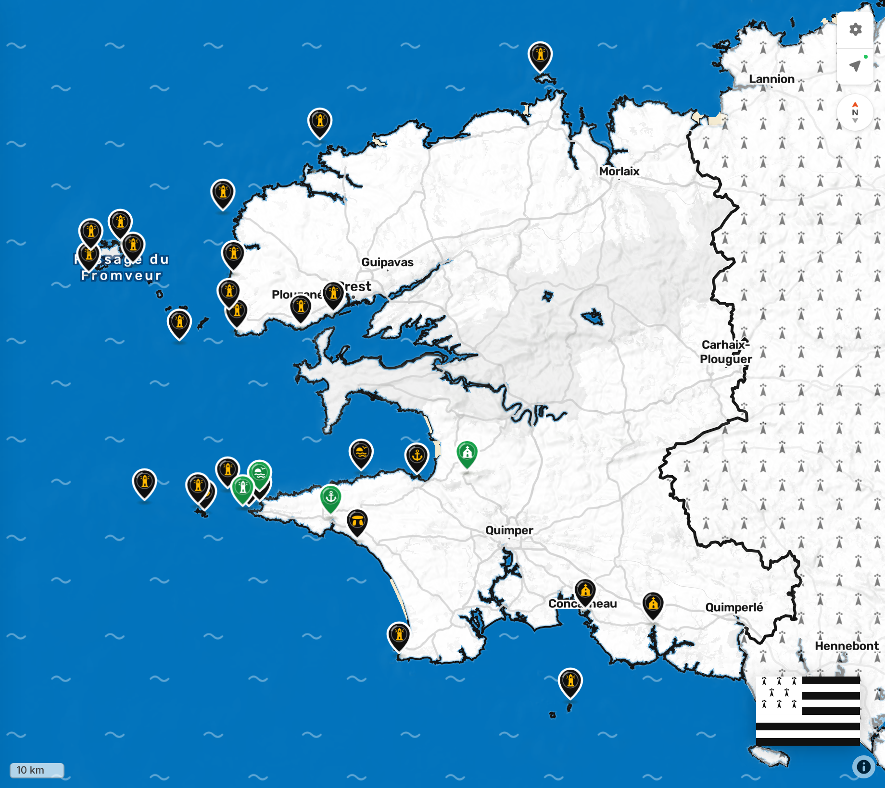
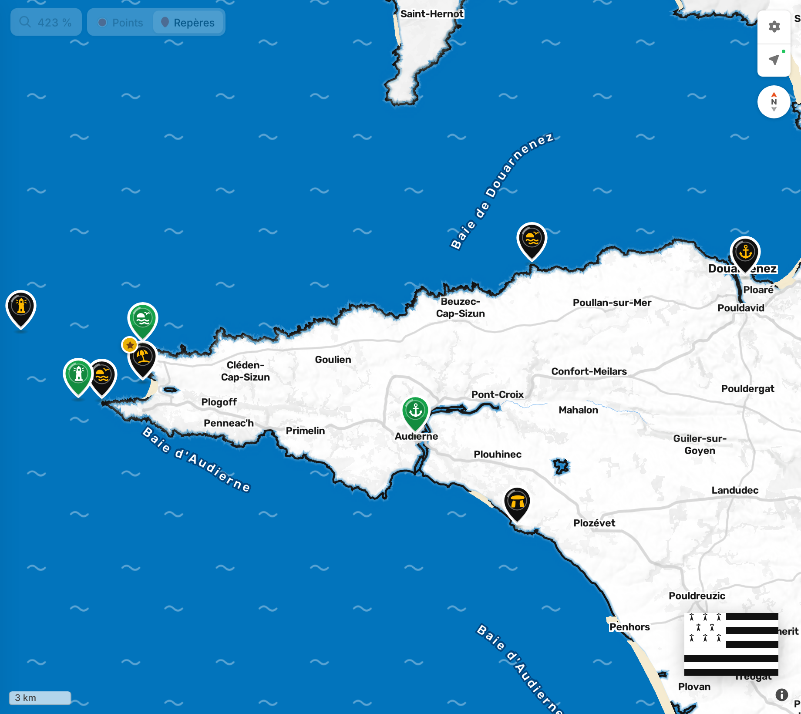
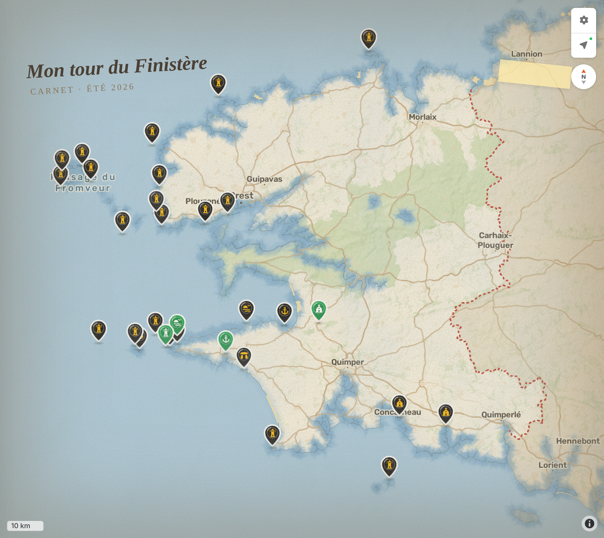
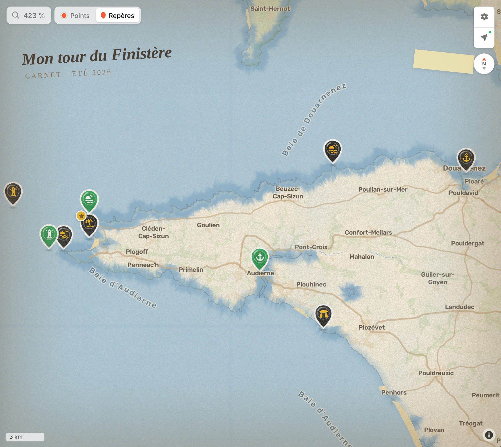

1. GuideMe brand
Mer bleu profond saturé, terre crème, côte blanche épaisse, Finistère cerné de jaune GuideMe, voisins grisés.
2. Carte au trésor
Parchemin, mer vert-de-gris, grain de papier, vignettage brun, rose des vents et cartouche.
3. Carte marine
Inspirée des cartes du SHOM : mer pâle, terre sable, trait de côte noir, quadrillage lat/long, rose des vents.
4. La nuit des phares
Mode nuit bleu marine, chaque phare diffuse un halo jaune : la côte se lit par ses feux.
5. Brouillard d’exploration
Façon jeu vidéo : la carte est couverte de brume, chaque lieu visité dégage un cercle autour de lui.
6. Jeu mobile pastel
Couleurs franches et douces, grosse bordure de plage autour des côtes, relief marqué, mer turquoise.


7. Relief sculpté
Ombrage du relief poussé (ombres violettes, lumières chaudes), routes estompées : les vallées et les crêtes ressortent.


8. Noir & jaune
Identité GuideMe radicale : mer noire, terre blanc cassé, Finistère cerné de jaune, vagues blanches.


9. Gwenn ha du
Authentique breton : terre blanche, mer bleu Cornouaille, côte noire, mouchetures d’hermine hors Finistère.


10. Carnet de voyage
Aquarelle sur papier : mer lavis bleu diffus, terre papier, bords flous, grain, titre manuscrit.

